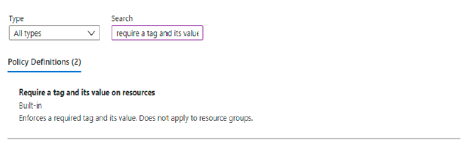
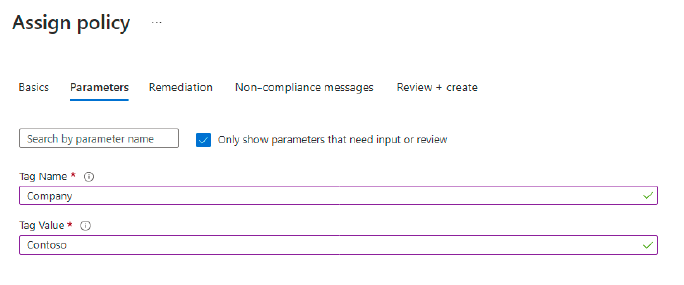
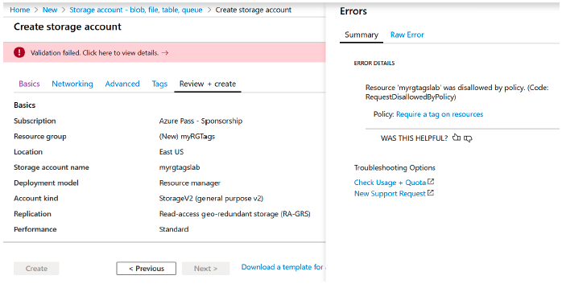
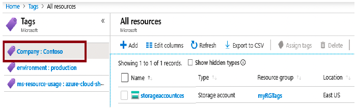
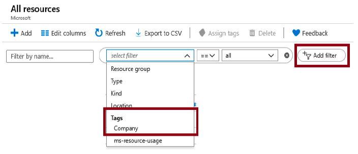

Lab 3: Implement Resource Tagging (5 min)
In this Lab, we will create a policy assignment that requires tagging, created a storage account and test the tagging, view resources with a specified tag, and remove the tagging policy.
Task 1: Create a Policy assignment
In this task, we will configure the Require a tag on resources policy and assign it to our subscription.
1 - Sign in to the Azure portal.
2 - From the All services blade, search for and select Policy.
3 - Scroll down to the Authoring section, click Assignments, and then click Assign Policy from the top of the page.
4 - Notice the Scope for our policy will be subscription wide.
5 - Under Basics Select the Policy definition ellipsis button (right side of textbox). In the Search box, enter the value tag. A list of related Policies with the word tag will appear. Scroll down till you find the Require a tag and its value on resources definition, click on it and click Select.

6 - On the Parameters tab, type in Company : Contoso for the tag key/value pair name. Click Review + Create, and then Create.
7 - The Require a tag and its value on resources policy assignment is now in place. When a resource is created, it must include a tag with the Company : Contoso key. Note: You need to wait up to 30 minutes for the Policy to be applied.

Task 2: Create a storage account to test the required tagging
In this task, we will create storage accounts to test the required tagging.
1 - In the Azure Portal, from the All services blade, search for and select Storage accounts, and then click + Add, + New, + Create.
2 - On the Basics tab of the Create storage account blade, fill in the following information (replace xxxx in the name of the storage account with letters and digits such that the name is globally unique). Leave the defaults for everything else.
| Setting | Value |
|---|---|
| Subscription | Use default provided |
| Resource group | Create new resource group |
| Storage account name | storageaccountxxxx |
| Location | (US) East US |
3 - Click Review + Create.
Note: We are testing to see what happens when the tag is not supplied. Please note, it can take up to 30 minutes for Policies to take effect.
4 - You will receive a Validation failed message. Click the Click here to view details message. On the Errors blade, on the Summary tab note the error message stating that resource was disallowed by Policy.
Note: If you view the Raw Error tab you will see the specific tag name that is required.

5 - Close the Error pane and click Previous (bottom of the screen). Provide the tagging information.
Feche o painel Erro e clique em Anterior (parte inferior da tela). Forneça as informações de marcação.
| Setting | Value | | --- | --- | | Tag name | Company:Contoso (may not be in the drop-down list) |
6 - Click Review + Create and verify that the validation was successful. Click Create to deploy the storage account.
Task 3: View all resources with a specific tag
1 - In the Azure Portal, from the All services blade, search for and select Tags.
2 - Note all tags and their values. Click the Company:Contoso key/value pair. This will display a blade showing the newly created storage account, as long as you included the tag during its deployment.

3 - In the Portal, display the All resources blade.
4 - Click Add filter and add the Company tag key as the filter category. With the filter applied, only your storage account will be listed.

Task 4: Delete the policy assignment
In this task, we will remove the Require a tag on resources policy so it does not affect our future work.
1 - In the portal, from the All services blade, search for and select Policy.
2 - Click the Require a tag on resources policy entry.
3 - Click Delete Assignment in the top menu.
4 - Confirm you wish to delete the policy assignment in the Delete assignment dialogue by clicking Yes.
5 - If you have time, create another resource without a tag to ensure the policy is no longer in effect.
Congratulations! In this Lab, we created a policy assignment that required tagging, created a resource (storage account) and tested the Policy for tagging, viewed resources with a specified tag, and removed the tagging policy.
Note: To avoid additional costs, you can optionally remove this resource group. Search for resource groups, click your resource group, and then click Delete resource group. Verify the name of the resource group and then click Delete. Monitor the Notifications to see how the delete is proceeding.